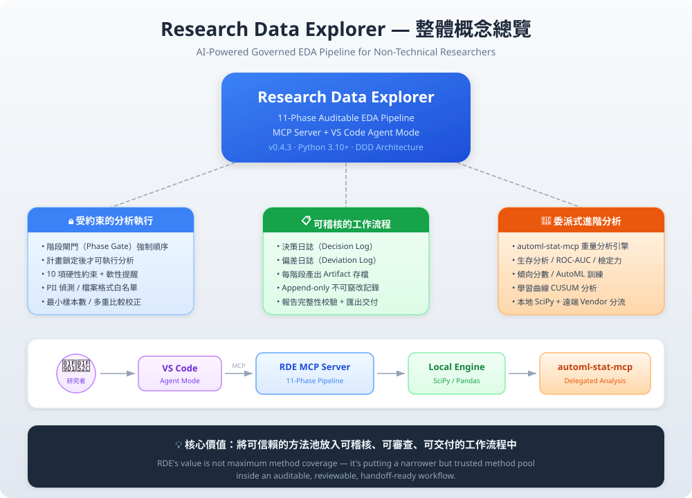
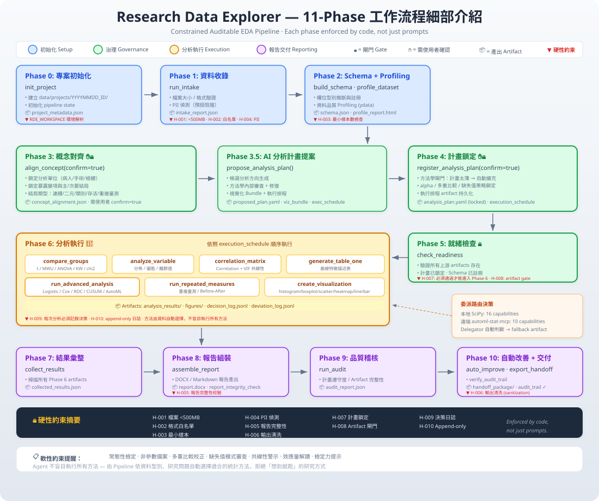
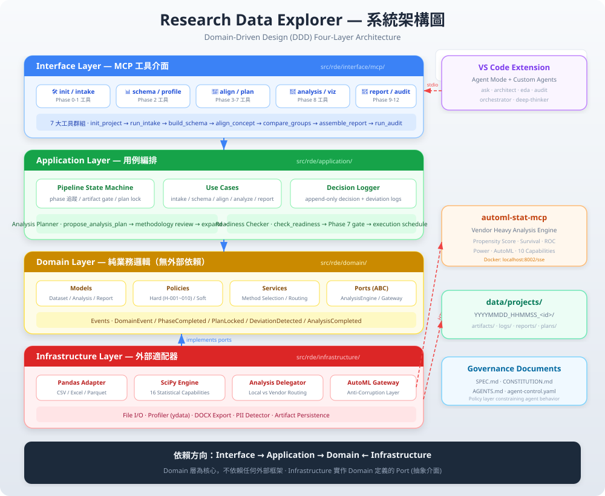

{kind=link}
給真實資料使用者
使用者可以提供 CSV、Excel 或其他支援格式，但不需要先知道該用哪些統計方法。
run_intakebuild_schemaprofile_dataset
總覽
RDE 不是讓 agent 自由寫一段 notebook 就結束，而是把 intake、schema、概念對齊、分析計畫、執行、報告、audit 與 handoff 放進同一條可追溯 pipeline。
格式、大小、PII、schema、profile 與 quality artifact 先建立。
研究問題、變數角色、方法學與 missing strategy 經確認後才能執行。
decision log、deviation log、report readiness 與 audit report 共同判定可信度。
RDE 的價值不是跑最多模型，而是讓非資料科學家也能走完可審查、可交接、可重現的 EDA 報告流程。
使用者可以提供 CSV、Excel 或其他支援格式，但不需要先知道該用哪些統計方法。
Copilot、Codex、Cline 應透過 MCP tools 執行，不用臨時 shell 腳本替代 pipeline。
報告包含方法、結果、圖表、決策、偏離與 audit。作者從完整報告中抽取可發表內容。

13-Phase Workflow
Phase 不是提示詞清單，而是 artifact gate。前一階段必要產物不存在時，後續工具不應繼續執行。

MCP Tools
每個主要操作都應透過 RDE MCP tool 產生 artifact。automl-stat-mcp 是可選重型引擎，核心報告路徑可 local-lite 完成。
| 階段 | 主要工具 | 用途 |
|---|
管理 project、pipeline state、artifact store、decision/deviation log、report readiness 與 audit。
保留為 optional vendor/heavy engine。Docker 不可用時，RDE 仍應用 local-lite 跑標準統計與核心報告。
Artifacts & Audit
RDE 的輸出不只是一份摘要，而是一組 project-scoped artifacts。報告應能指出資訊來自哪個 phase、哪個檢查與哪個 log entry。
intake_report.json、schema.json、profile 與 quality report 先建立資料可信基礎。
concept_alignment.md、variable_roles.json、analysis_plan.yaml 讓研究問題到方法的映射可審查。
Phase 8 的分析、圖表、Table 1、模型摘要與 fallback 說明都寫入 project-scoped 目錄。
decision_log.jsonl、deviation_log.jsonl、report_readiness、audit_report.json 是報告可信度核心。
檔案大小、格式白名單、PII 預設阻擋、樣本數、report integrity、plan lock、artifact gate 與 append-only logs。
常態性、多重比較、missing pattern、outlier strategy、VIF、effect size、power 與 sensitivity analysis 提醒。
核心目標缺漏會以 core_goal:* gaps 回報，不能把未完成報告誤標為 production-ready。
log_deviation。
Common Flows
RDE 的網站應讓使用者知道「我想看資料」、「我想比較兩組」、「我要報告」分別會觸發哪些受治理步驟。
Phase 0-12：project setup、intake、schema、alignment、plan、readiness、execution、collect、report、audit、auto-improve、handoff。
init_project → run_intake → build_schema → profile_dataset → quick report。輸出應標記為未完整 audit。
先走 Phase 0-7，確認變數角色與前提後，再執行 generate_table_one 或 compare_groups。
collect_results 標記 publishable items，assemble_report 組報告，run_audit 評分，最後 export_handoff。
VSIX / Codex
RDE 的 VSIX 與 Codex 支援應先啟動 bundled/local RDE MCP。automl-stat-mcp 只在需要重型 vendor workflow 時啟用。
python scripts/configure_codex_mcp.py --apply python scripts/codex_rde_smoke.py --list-tools-only python scripts/codex_rde_smoke.py
python3 -m pip install -e . python3 -m rde
Command Palette 可用 RDE: Configure Codex MCP、RDE: Run Full Pipeline (13-Phase) 與 UX Harness Dashboard。
支援描述統計、Table 1、組間比較、ROC/AUC、基本 power hint、Kaplan-Meier 與輕量 adjusted models。
若需要 full propensity matching、進階 survival 或 AutoML training，可另啟 vendor/automl-stat-mcp。
